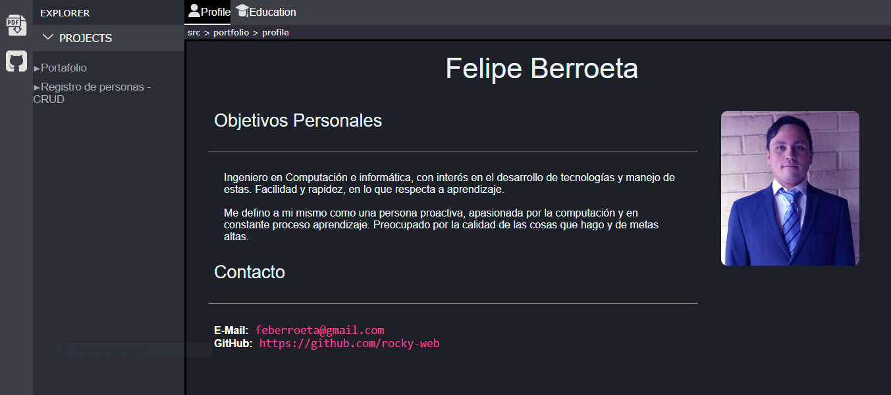

Portafolio
Tecnologías
- HTML5
- CSS
- Javascript
Estado
En desarrollo
Descripción
Este es un proyecto que surgió con motivo de dar a conocer mis habilidades como programador, perfil profesional y algunos proyectos que he hecho de forma personal.
Quería que el diseño fuera algo original y no una simple 'landing page', por lo que se me ocurrió imitar la interfaz gráfica de VsCode, ya que es algo que lo encuentro bastante estético para este fin.
Para lo que es el control de versiones utilice git y github